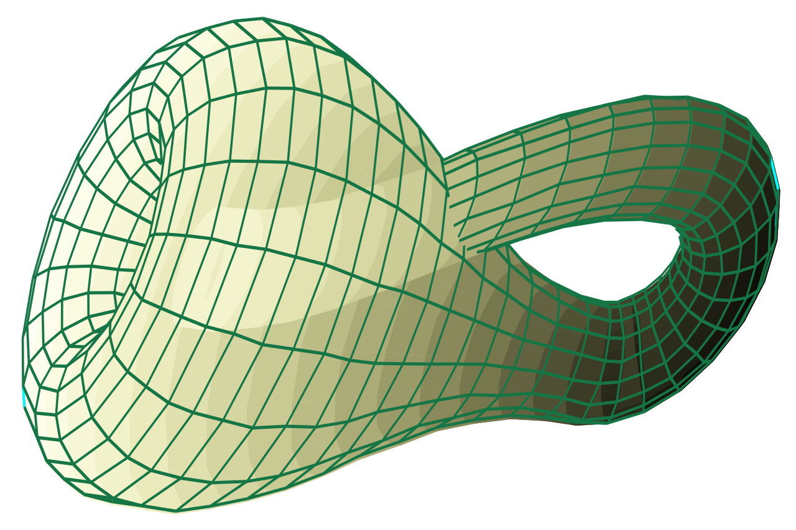
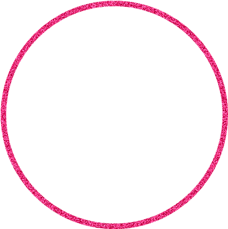

Una n-variedad \(\mathcal{M}\) es un espacio topológico que loclamente tiene la estructura de \(\mathbb{R}^n\), es decir, para cada punto \(u\in \mathcal{M}\) existe una vecindad de \(u\), \(U_u\), que es homeomorfa a \(\mathbb{R}^n\) Aprende más >>
El toro \(\mathbb{T}\)
\(\mathbb{S}^2\)
La botella de Klein
\(S^1\)
